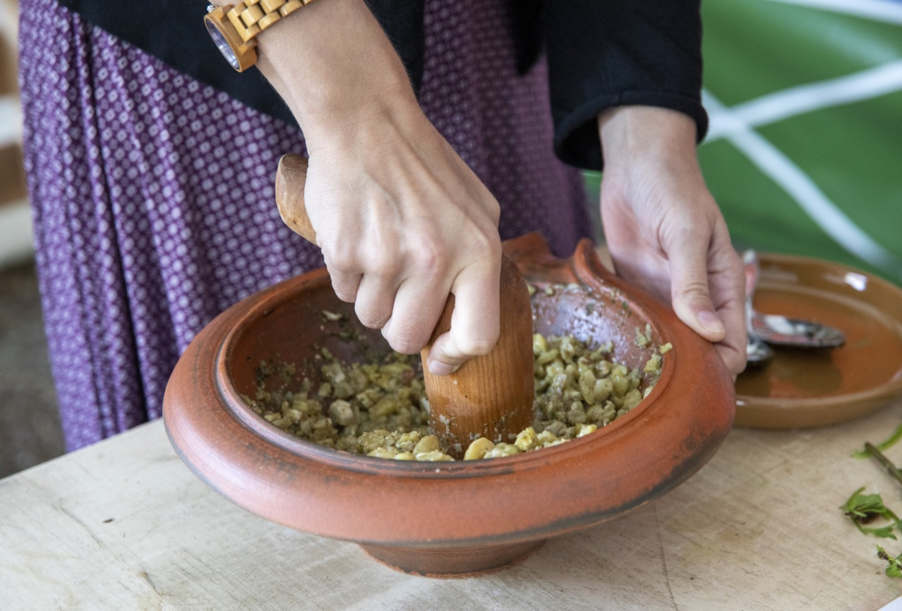

Ausstellungen und Events
Alle anzeigen

Ein oder zwei Teaser nebeneinander; ab drei Teasern wird daraus der Teaser Slider. Die Karte hebt sich beim Erscheinen, das Bild setzt sich aus leichtem Zoom, danach folgt der Text. Beim Scrollen bewegt sich das Bild minimal langsamer als die Karte.
| Was | Auslöser | Dauer · Easing |
|---|---|---|
| Karte steigt 40 px auf und blendet ein (Double: 110 ms versetzt) | Karte 85 % im Viewport | 1.0 s · AR.ease.out |
| Bild setzt sich von 108 % auf 100 % | gleichzeitig | 1.6 s · AR.ease.out |
| Titel, Meta, Buttons folgen von unten (16 px) | +0.25 s, 70 ms gestaffelt | 0.6 s · AR.ease.out |
| Bild-Parallax (−4 % → +4 %) | Scroll, gekoppelt | scrub: true |
| Bild-Zoom 104 % | Hover / Fokus | CSS 0.9 s · --ease-out |
| Reduzierte Bewegung | Nur Einblenden (Karte, dann Text), kein Zoom, keine Parallax. | |